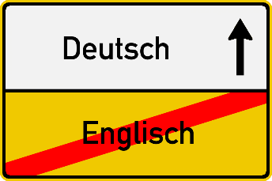

Meetings & Instructor
Class Sessions
Section 001: Mondays, Wednesdays and Fridays 12:00-12:50pm, Bate 1009
Section 002: Mondays, Wednesdays and Fridays 2:00-2:50pm, Bate 1012
Section 601: Mondays, Wednesdays and Fridays 2:00-2:50pm, Online

Dr. Jacob van der Kolk
vanderkolkj23@ecu.edu
Office Hours (through WebEx or in-person)
Office: Bate 3306
Tuesdays and Thursdays 10:00am-1:00pm and 2:00-3:00pm
and by appointment
Course Description and Objectives
In GERM 1001, you will develop fundamental language skills and learn about the history, culture, and everyday life of German-speaking countries, which will help you discover your own culture and language and make cross-cultural comparisons.
People in not only Germany, Austria, Switzerland, and Liechtenstein, but also parts of Italy, Belgium, the Netherlands, France, Eastern Europe, the U.S., and Latin America speak German. Good pronunciation of German is an asset for voice majors and knowing German will help you understand the works and ideas of many who formed our world. Knowing more about foreign cultures reveals the assumptions we make about our own society.
After completing GERM 1001, your linguistic proficiency should be displaying novice-low or even novice-mid proficiency on the ACTFL scale or A1 on the Common European Framework of References for Languages scale.
Learning Objectives
- communicate and exchange information on familiar topics — including everyday activities, ordering food at a restaurant, shopping for groceries and clothing, and playing various sports — using phrases and simple sentences, sometimes supported by memorized language
- handle short social interactions in everyday situations by asking and answering simple questions
- write short messages and notes on familiar topics related to everyday life
- recognize pieces of information, words, phrases, and simple sentences related to everyday life in spoken German and sometimes understand the main topic of what is being said
- understand familiar words, phrases, and sentences in short and simple texts related to everyday life
- sometimes understand the main idea of a more difficult text you have read
Online Section
Students officially registered for the online section must:
- have a laptop, desktop computer, or tablet with a functioning camera and microphone that they can use to participate in class. Joining class by smartphone is not allowed. You may borrow equipment from ECU's libraries.
- keep their cameras on for the duration of each class meeting to show attendance.
- regularly respond to spoken and written prompts to show active participation.
All sections, face-to-face and online, share one Canvas site and will complete the same homework assignments.
Course Materials

Required. Niko Tracksdorf, et. al., Impuls Deutsch 1, Blended Bundle, 2019 [ISBN: 9783126053068]. Includes print book Machen and online workbook components Lernen and Zeigen.
- You must have a hard copy of the Machen textbook.
- You must have access to the online workbooks Lernen and Zeigen.
- Dowdy Bookstore and UBE sell the complete bundle, or you can order it online at https://www.klett-usa.com/impuls-deutsch-1/t-1/9783126053068.
- Always bring your Machen book to any online class or group meetings, as we will work with it every session.
Bring a phone for any online activities we might do in class.
Grading and Assignments
Grading Scale
| Grade | A | A- | B+ | B | B- | C+ | C | C- | D+ | D | D- | F |
|---|---|---|---|---|---|---|---|---|---|---|---|---|
| 10-Point Scale | 94-100% | 90-93.99% | 87-89.99% | 83-86.99% | 80-82.99% | 77-79.99% | 73-76.99% | 70-72.99% | 67-69.99% | 63-66.99% | 60-62.99% | 0-59.99% |
| Quality Points | 4.0 | 3.7 | 3.3 | 3 | 2.7 | 2.3 | 2 | 1.7 | 1.3 | 1 | 0.7 | 0 |
Participation (25%)
For each class, you will receive between -1 and +2 points for your participation grade based on the following criteria:
| Criteria | Present, Participated | Present, Didn't Participate | Partially Present, Participated | Partially Present, Didn't Participate | Absent/Unexcused | Absent/Excused |
|---|---|---|---|---|---|---|
| Participation Points | 2 | 1 | 1 | 0 | -1 | N/A |
| Unexcused Absence Count | 0 | 0 | 0.5 | 0.5 | 1 | 0 |
- Presence. Please let Dr. van der Kolk know if you will be absent for a class, whether excused or not.
- Excused absences are for participation in official ECU activities, military training, extreme personal or medical emergencies, death of an immediate family member, and religious holidays and must have documentation (University policy on documentation). Excused absences will not count for or against your grade, but please review the class recordings or see Dr. vdK in office hours afterward to get caught up.
- If you end the semester with six excused absences, your final grade will be an Incomplete ("I").
- All others are unexcused absences. See the official university policy on attendance for details.
- If you end the semester with six unexcused absences, your final grade will be an "F".
- If you must be absent in your regular section, you can make up your absence:
- In-person students may attend the other in-person section on the same day without prior notice.
- In-person students may attend the online section on the same day with prior notice and/or an officially recognized excuse.
- If all else fails, you can recuperate an unexcused absence by meeting with Dr. van der Kolk in office hours or with a tutor at the Pirate Academic Success Center for cumulatively twice amount of time you missed.
- To be counted as fully present, you must attend at least 45 out of 50 minutes of a class.
- To be counted as partially present (half absence), you must attend between 5 and 25 minutes of 50 minutes.

- Excused absences are for participation in official ECU activities, military training, extreme personal or medical emergencies, death of an immediate family member, and religious holidays and must have documentation (University policy on documentation). Excused absences will not count for or against your grade, but please review the class recordings or see Dr. vdK in office hours afterward to get caught up.
- Participate. To get full participation for a session, you must accomplish all of the following:
- Engage. You involve yourself in all class meetings, including group and whole-class activities, and make a good faith effort to express yourself in German. However:
Linguistic Correctness.You are not expected to speak perfectly, just to try your best as often as you can with the language you have learned!
- Be prepared. You come to class ready and willing to practice the vocabulary, grammar, and topics touched on in your homework and previous class sessions. You bring all necessary materials, including our Machen textbook, a pencil, and paper.
- Cooperate. You support and encourage your fellow students. Be an asset to others' learning, and they will be an asset to you.
- Engage. You involve yourself in all class meetings, including group and whole-class activities, and make a good faith effort to express yourself in German. However:
Homework (25%)
Check the homework plan posted on Canvas every day. Expect to spend up to 2 hours on homework and preparation for each class session.
- Submit the set of assignments on time, even if you will be absent that day.
- Submit all parts of all assignments due that day. Every single blank of every single assignment must be filled in.
- Present a good faith effort, that is, you try to genuinely engage with the material.
- It is not good faith to just copy-and-paste answers from another student's submission or give a one word answer for a question asking for a complete sentence.
- Reattempt exercises at least once if you find significant problems.
There are three different types of homework activities:
- "Lernen" Homework. Online exercises done before class.
- "Zeigen" Homework. Online exercises done shortly after a class.
- Quizlet Vocabulary. Complete the "Learn" and "Test" activities from Quizlet to "Mastery" status.
Quizzes (22%)
Every third class period will have a short quiz on vocabulary and grammar. Each quiz assumes continued mastery of previous topics.
Projects (15%, 7.5% each)
You will complete two projects designed to showcase your communicative skills in German.
Final Assessment (10%)
You will complete a oral assessment during exam week, which will gauge your listening and speaking skills.
Cultural Engagement (3%)
Over the semester, you will participate in at least three cultural engagement activities outside of class related to German-speaking culture, like participating a film night, attending a talk by a speaker, or attending a German Club chat hour. Elligible events will be announced as the semester goes on. You will submit a report for each of the three events through Canvas.
How to Succeed
The most successful students typically do the following:
-
Keep up. College language classes move fast and require constant engagement. Students most often struggle not because of the difficulty of the content, but rather because they fall behind. Make sure to:
- Show up. Missing one or (even worse) several sessions in a row makes everything you learn afterwards harder. Be absent as sparingly as possible!
- Complete all assignments on time. Missing a homework won't just cost you points, it will leave you unprepared for the next day's lesson, and the next assignment, which will make the next class and assignment harder, and the next, and the next...
-
Get your money's worth:
- Use office hours. Email me to make an appointment, or feel free to "stop by" with questions! Don't suffer from FMOOWMP! →
- Talk a lot! Make lots of mistakes! You will make mistakes as you try out new vocabulary and grammar. This shows me how I can help you.
- Ask questions! When you’re lost, confused, or have a question, someone else probably has the same one (and they’ll be glad you asked).
- Overwhelmed? Frustrated? Get help NOW! Save yourself aggravation and extra work later on by taking advantage of the extra videos I post, e-mailing me, coming to my office hours, or using our free German tutors through the Pirate Academic Success Center now. Book an appointment with the Pirate Academic Success Center via tutoring@ecu.edu or 252-737-3009.
-
Learn smarter, not longer. Studies show that people retain knowledge better and quicker when they learn small amounts at a time and review repeatedly. With a little foresight and planning, you can save time and frustration if you:
- Build a routine. Set aside a time every day or every other day to do your work. Make it a habit.
- Small tasks. Cramming is inefficient. Instead, break assignments into a series of smaller, manageable tasks that allow your mind time to digest what it just learned.
- Be opportunistic. Use short bits of time that you might waste (e.g. standing in a long line, eating by yourself, waiting for class to start) practicing vocabulary instead.
- Take breaks. Give yourself time to let things sink in when studying. Schedule a break every so often so that you don't work for more than an hour at a time.
- If you get stuck, revisit later. If a particular lesson or exercise frustrates you, put it aside, work on something else, and let your brain reset. It may make sense later.
- Put in the time. Language learning isn't hard, but it does take time. We expect you to work up to 6 hours a week outside of class, however...
- If you need more than 6 hours/week to keep up, or just feel overwhelmed, get help! Come and see me in my office hours, so that we can hash out methods that will work specifically for you.
- Find study partners. Get to know your classmates and form groups in which you can collaborate on day-to-day assignments and study for tests. But make sure you still do your own work!
-
Master the basics. We learn the most basic language first because it is the most important and most used, so be patient.
- Put effort into your homework. Homework explains the basics that we will then practice in more sophisticated ways in class. Putting a genuine effort into homework is vital to your success.
- Vocabulary, vocabulary, vocabulary! Having a strong working vocabulary makes everything easier and faster. Learn a few words every day. Use our Quizlet utilities or (even better) old-fashioned paper flash cards – find what works for you!
Class Etiquette and Course Policies
In the Classroom
Our class will be a respectful environment, where all students feel comfortable sharing their thoughts and opinions. Please let me know if anything in or outside of class makes you feel uncomfortable. 
- Bitte keine Handys! Please stay off phones, laptops, and tablets unless required for class activities. Texting in class will take a point off your participation grade for that day.
- Check email frequently as I use it for class communication. Missing an email is not a valid excuse.
- Pronouns and Preferred Names. Let me know if you have a preferred name that differs from your legal name listed in the university's records, or if you have specific pronouns that you would prefer.
Academic Integrity
| Acceptable. DO THIS! | Unacceptable. DON'T DO THIS! |
| Show off what you've learned on a project by using the expressions and grammar we have focused on. | Use grammar and vocabulary or vocabulary that we haven't focused on. I will assume you got them from illicit sources, like an online translator or generative AI service. |
| Adapt an expression you saw in Impuls Deutsch for your own work. | Copy out whole sentences from another source and claim it as your own work. |
| Ask someone to underline, but not correct, the mistakes in your essay. | Have a native speaker, friend, teammate, peer, or parent provide corrections to your essay. |
| Look up vocabulary words in Impuls Deutsch or Quizlet. | Use an online translator to translate a sentence or paragraph.* |
| Paraphrase an outside source and use a citation. | Use outside sources without citing. |
| Use Impuls Deutsch and your notes to check your genders, spellings, and plural forms. | Have a grammar checker identify and revise your mistakes for you. |
English: Dear Fruit Syrup: I'm passing by the category today.†
Accommodations
East Carolina University seeks to comply fully with the Americans with Disabilities Act (ADA). Reasonable accommodations will be made for students with verifiable disabilities. In order to take advantage of available accommodations, students must be registered with the Department for Disability Support Services located in Slay 138, 252-737-1016. Accommodation Information & Processes.
Emergency Information
In the event of a campus emergency that disrupts academic activities, course requirements, deadlines, and grading percentages are subject to change. Information about changes in the course will be communicated as soon as possible by email and on Canvas. If we are not able to meet face-to-face, students should log onto Canvas and read any announcements and/or access alternative assignments. (http://www.ecu.edu/alert). Emergency info hotline: 328-0062
Semester Schedule
This outline contains all major assignments. It is, however, subject to change at my discretion. For daily homework, see the detailed plan online on Canvas.
| Week 1 | Monday, August 19 Introduction Survey und Syllabus Quiz |
Wednesday, August 21 and Friday, August 23 Chapter 1 |
|
| Week 2 | Monday, August 26 Chapter 1 Quiz 1 |
Wednesday, August 28 and Friday, August 30 Chapter 1 |
|
| Week 3 | Monday, September 2 Chapter 1 Quiz 2 |
Wednesday, September 4 and Friday, September 6 Chapter 1 |
|
| Week 4 | Monday, September 9 Chapter 1 Quiz 3 |
Wednesday, September 11 and Friday, September 13 Chapter 1 |
|
| Week 5 | Monday, September 16 Chapter 1 Quiz 4 |
Wednesday, September 18 and Friday, September 20 Chapter 1 |
|
| Week 6 | Monday, September 23 Chapter 1 Quiz 5 Project 1 Step 1 due! |
Wednesday, September 25 Chapter 1 |
Friday, September 27 Project 1 Step 2 due! |
| Week 7 | Monday, September 30 Chapter 1 Project 1 Step 3 due! |
Wednesday, October 2 Chapter 1 Quiz 6 |
Friday, October 4 Project 1 Step 4 due! |
| Week 8 | Monday, October 7 Fall Break. No class! |
Wednesday, October 9 Chapter 1 |
Friday, October 11 Final Project 1 due! (Step 5) Present Project 1! (Step 6) |
| Week 9 | Monday, October 14 Chapter 2 Quiz 7 |
Wednesday, October 16 and Friday, October 18 Chapter 2 |
|
| Week 10 | Monday, October 21 Chapter 2 Quiz 8 |
Wednesday, October 23 and Friday, October 25 Chapter 2 |
|
| Week 11 | Monday, October 28 Chapter 2 Quiz 9 |
Wednesday, October 30 and Friday, November 1 Chapter 2 |
|
| Week 12 | Monday, November 4 Chapter 2 Quiz 10 |
Wednesday, November 6 and Friday, November 8 Chapter 2 |
|
| Week 13 | Monday, November 11 Chapter 2 Quiz 11 |
Wednesday, November 13 Chapter 2 |
Friday, November 15 Project 2 Step 1 due! |
| Week 14 | Monday, November 18 Chapter 2 Project 2 Step 2 due! |
Wednesday, November 20 Chapter 2 Quiz 12 |
Friday, November 22 Project 2 Step 3 due! |
| Week 15 | Monday, November 25 Chapter 2 Project 2 Step 4 due! |
Wednesday, November 27 and Friday, November 29 No class. Thanksgiving break! |
|
| Exam Week | Monday, December 2 Review Final Project 2 due! (Step 5) |
Wednesday, December 4 No Class. Exam Week. |
Friday, December 6, 5:00-7:30pm Final Oral Exam |